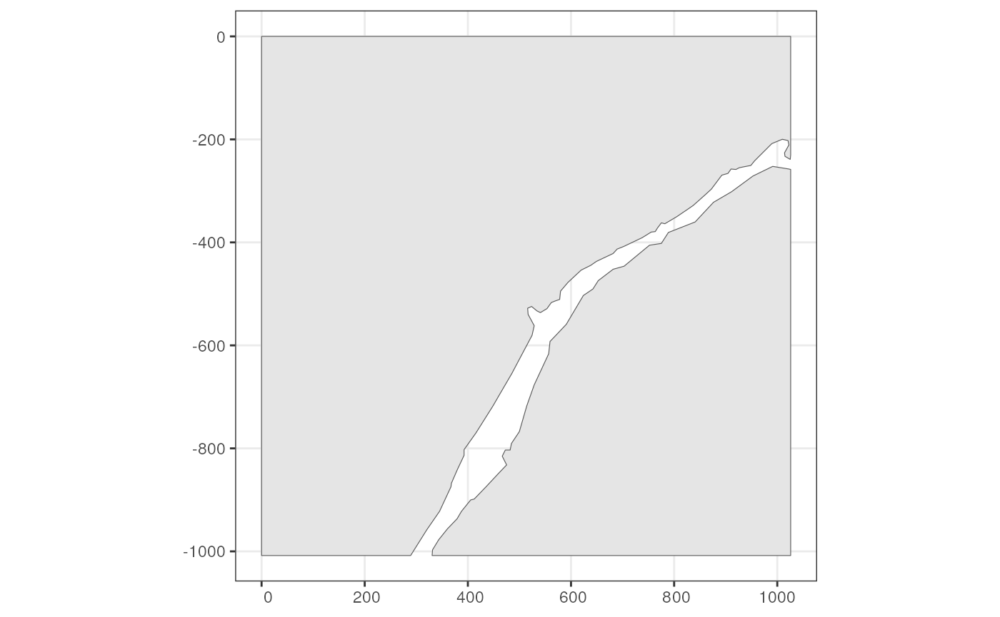
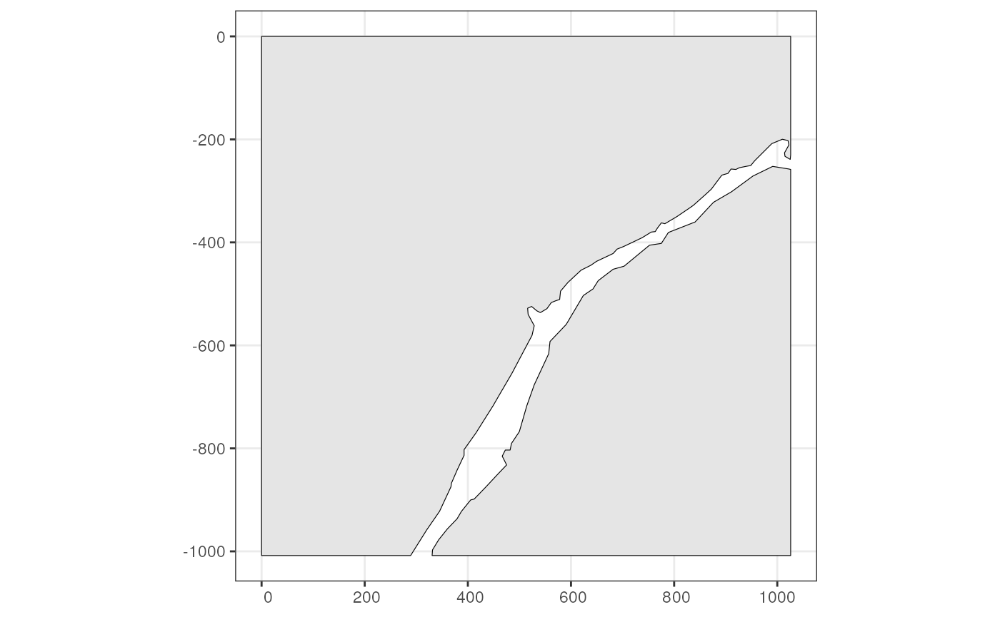
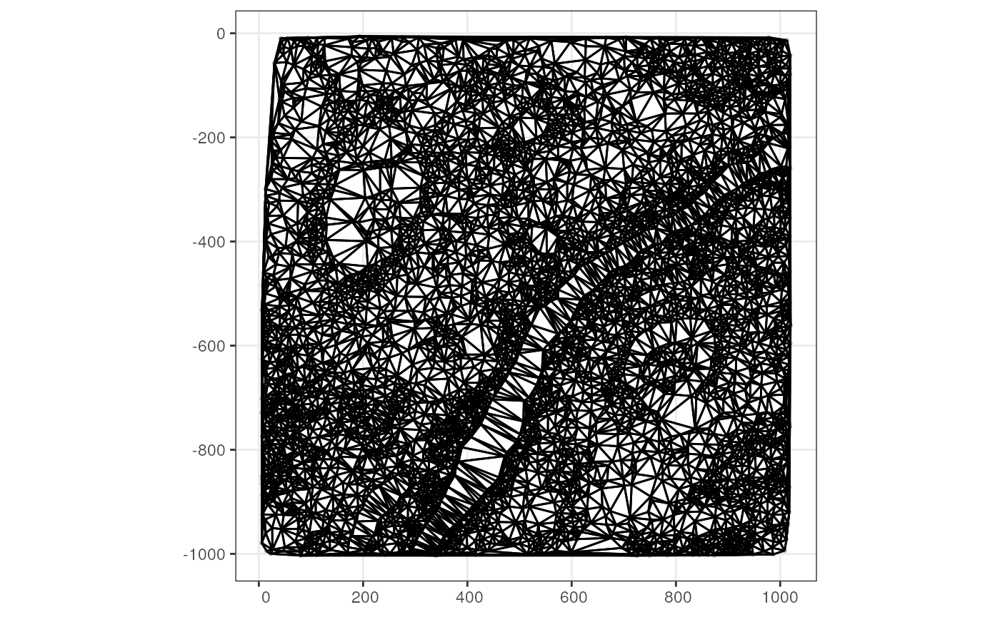
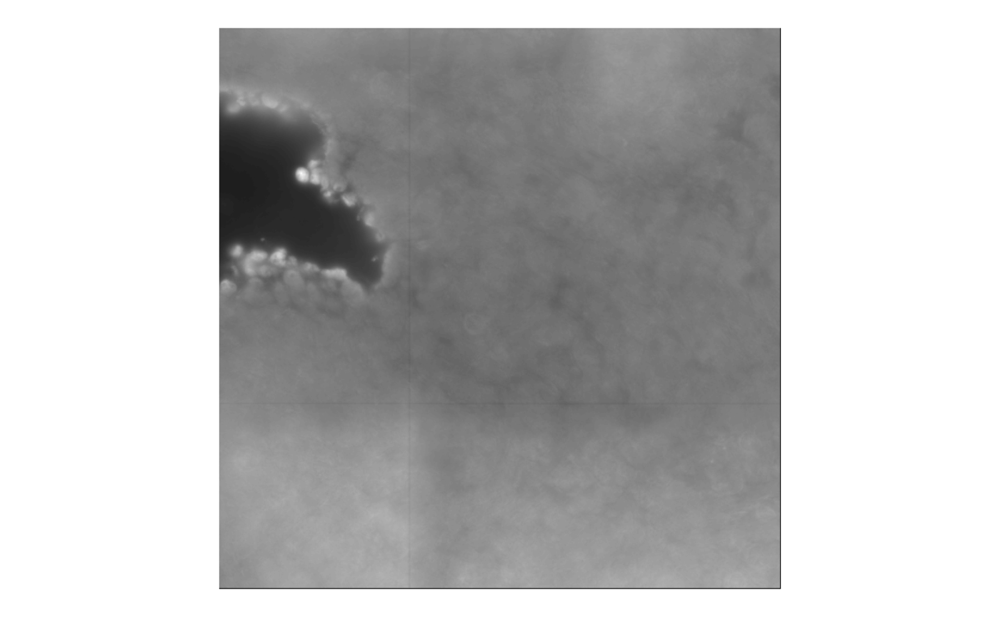
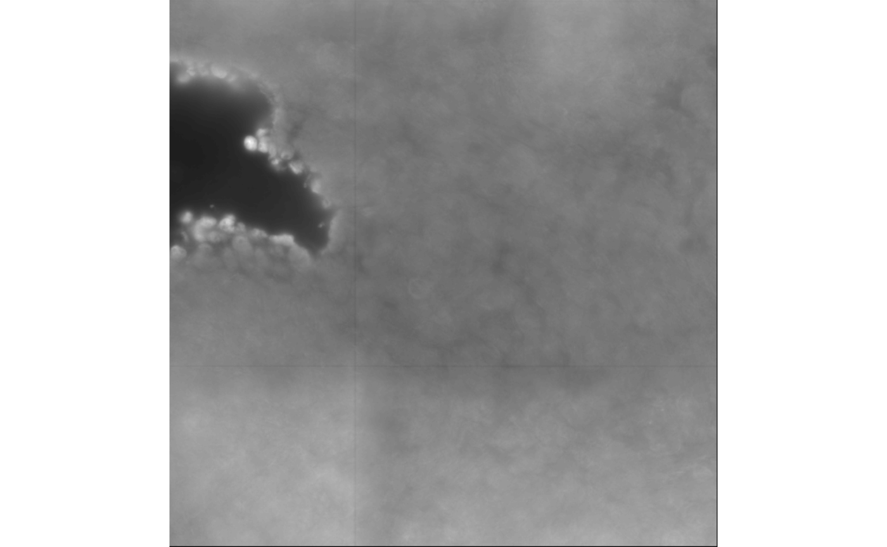
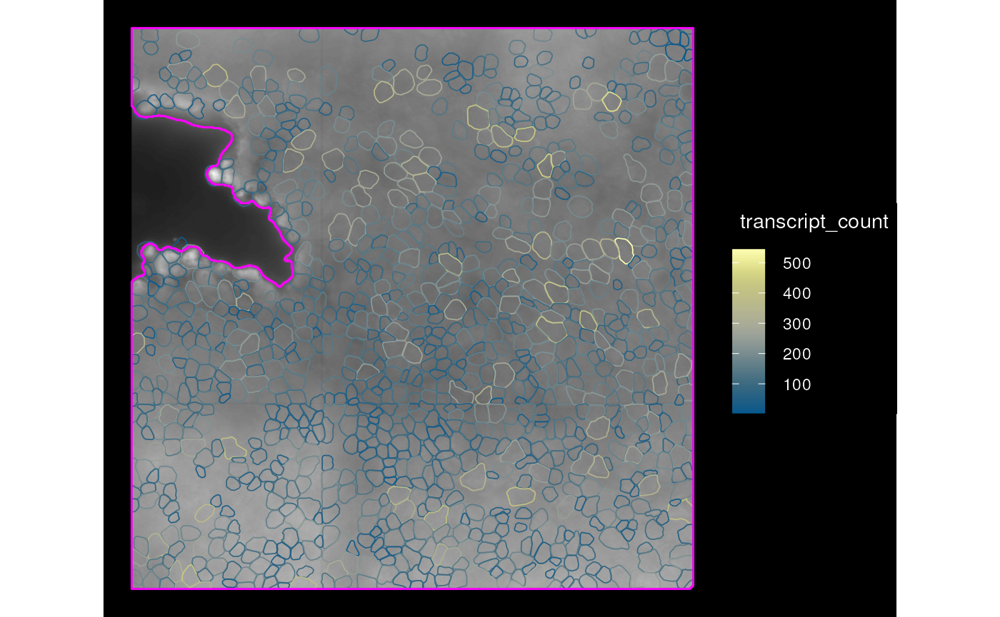
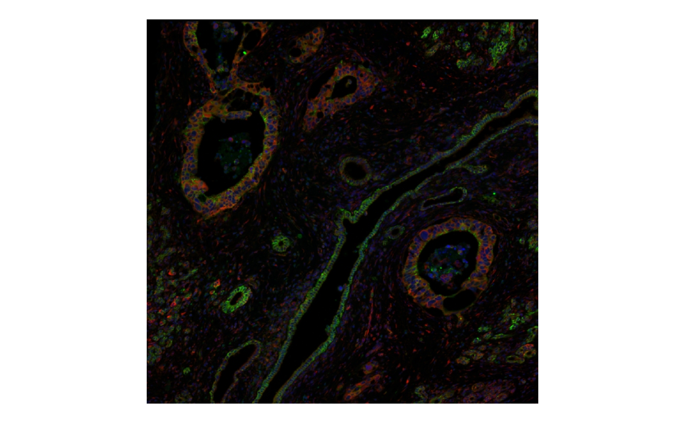
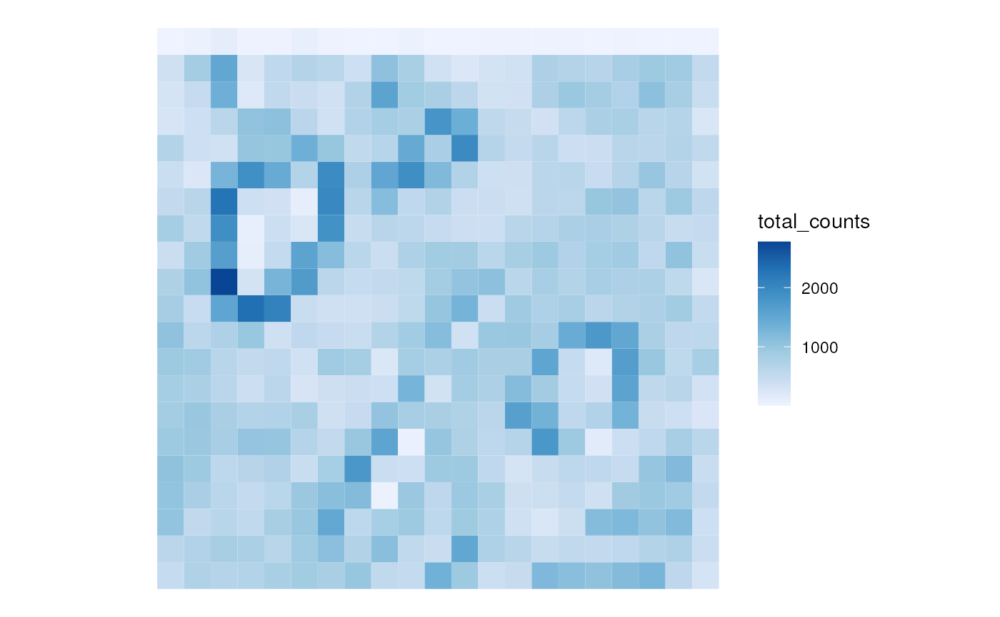
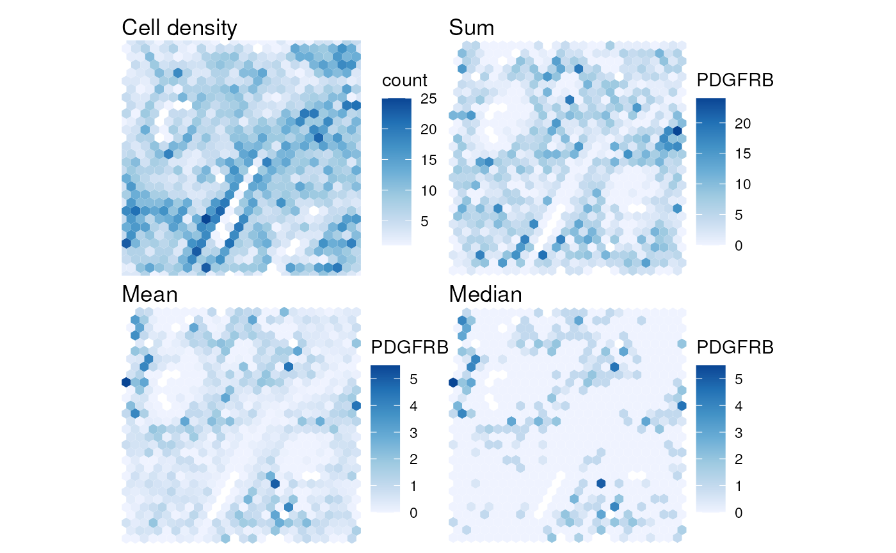
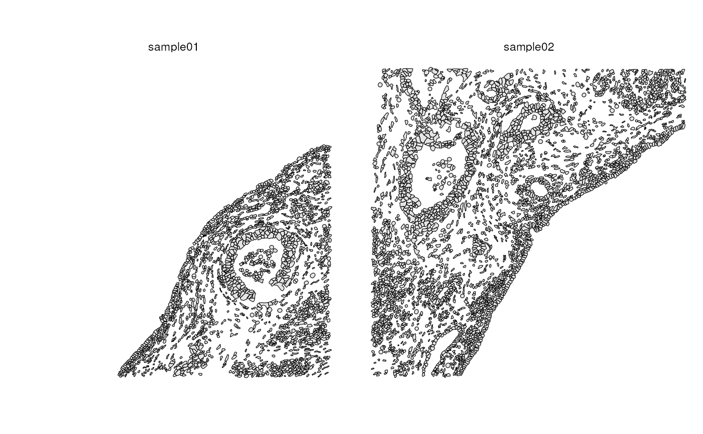

Images and transcript spots in SFE
Lambda Moses
dl3764@columbia.eduAlik Huseynov
alikhuseyno@gmail.comLior Pachter
lpachter@caltech.edu2024-07-23
Source:vignettes/workshop.Rmd
workshop.Rmd
SpatialFeatureExperiment
SpatialFeatureExperiment (SFE) is a new S4 class built on top of SpatialExperiment
(SPE). SFE incorporates geometries and geometric operations with the sf
package. Examples of supported geometries are Visium spots represented
with polygons corresponding to their size, cell or nuclei segmentation
polygons, tissue boundary polygons, pathologist annotation of
histological regions, and transcript spots of genes. Using
sf, SpatialFeatureExperiment leverages the
GEOS C++ library underlying sf for geometry operations,
including algorithms for for determining whether geometries intersect,
finding intersection geometries, buffering geometries with margins, etc.
A schematic of the SFE object is shown below:

Below is a list of SFE features that extend the SPE object:
-
colGeometriesaresfdata frames associated with the entities that correspond to columns of the gene count matrix, such as Visium spots or cells. The geometries in thesfdata frames can be Visium spot centroids, Visium spot polygons, or for datasets with single cell resolution, cell or nuclei segmentations. MultiplecolGeometriescan be stored in the same SFE object, such as one for cell segmentation and another for nuclei segmentation. There can be non-spatial, attribute columns in acolGeometryrather thancolData, because thesfclass allows users to specify how attributes relate to geometries, such as “constant”, “aggregate”, and “identity”. See theagrargument of thest_sfdocumentation. -
colGraphsare spatial neighborhood graphs of cells or spots. The graphs have classlistw(spdeppackage), and thecolPairsofSingleCellExperimentwas not used so no conversion is necessary to use the numerous spatial dependency functions fromspdep, such as those for Moran’s I, Geary’s C, Getis-Ord Gi*, LOSH, etc. Conversion is also not needed for other classical spatial statistics packages such asspatialregandadespatial. -
rowGeometriesare similar tocolGeometries, but support entities that correspond to rows of the gene count matrix, such as genes. As we shall see below, a use case is to store transcript spots for each gene in smFISH or in situ sequencing based datasets. -
rowGraphsare similar tocolGraphs. A potential use case may be spatial colocalization of transcripts of different genes. -
annotGeometriesaresfdata frames associated with the dataset but not directly with the gene count matrix, such as tissue boundaries, histological regions, cell or nuclei segmentation in Visium datasets, and etc. These geometries are stored in this object to facilitate plotting and usingsffor operations such as to find the number of nuclei in each Visium spot and which histological regions each Visium spot intersects. UnlikecolGeometriesandrowGeometries, the number of rows in thesfdata frames inannotGeometriesis not constrained by the dimension of the gene count matrix and can be arbitrary. -
annotGraphsare similar tocolGraphsandrowGraphs, but are for entities not directly associated with the gene count matrix, such as spatial neighborhood graphs for nuclei in Visium datasets, or other objects like myofibers. These graphs are relevant tospdepanalyses of attributes of these geometries such as spatial autocorrelation in morphological metrics of myofibers and nuclei. With geometry operations withsf, these attributes and results of analyses of these attributes (e.g. spatial regions defined by the attributes) may be related back to gene expression. -
localResultsare similar toreducedDimsinSingleCellExperiment, but stores results from univariate and bivariate local spatial analysis results, such as fromlocalmoran, Getis-Ord Gi*, and local spatial heteroscedasticity (LOSH). Unlike inreducedDims, for each type of results (type is the type of analysis such as Getis-Ord Gi*), each feature (e.g. gene) or pair of features for which the analysis is performed has its own results. The local spatial analyses can also be performed for attributes ofcolGeometriesandannotGeometriesin addition to gene expression andcolData. Results of multivariate spatial analysis such as MULTISPATI PCA can be stored inreducedDims. -
imgDatastore images associated with the dataset. This field is inherited from SPE, but SFE has extended the image functionalities so images are not loaded into memory unless necessary.
library(Matrix)
library(sf)
library(fs) # I put it after sf intentionally
library(terra)
library(ggplot2)
library(SingleCellExperiment)
library(Seurat)
library(scater)
library(SpatialExperiment)
library(SpatialFeatureExperiment)
library(SFEData)
library(Voyager)
library(EBImage)
library(scales)
library(patchwork)
library(dplyr)
library(tidyr)
library(tibble)
library(stringr)
library(arrow)
library(sparseMatrixStats)
library(metrica)
theme_set(theme_bw())The material here is either taken from the documentation websites of
SpatialFeatureExperiment
and Voyager
(release version; devel version: SFE,
Voyager)
or will be added to them. Some topics are covered in more details on the
documentation websites. A rendered version of the workshop can be seen
here.
SFE object construction
From scratch
An SFE object can be constructed from scratch with the assay matrices
and metadata. In this toy example, dgCMatrix is used, but
since SFE inherits from SingleCellExperiment (SCE), other
types of arrays supported by SCE such as delayed arrays should also
work.
# Visium barcode location from Space Ranger
data("visium_row_col")
coords1 <- visium_row_col[visium_row_col$col < 6 & visium_row_col$row < 6,]
coords1$row <- coords1$row * sqrt(3)
# Random toy sparse matrix
set.seed(29)
col_inds <- sample(1:13, 13)
row_inds <- sample(1:5, 13, replace = TRUE)
values <- sample(1:5, 13, replace = TRUE)
mat <- sparseMatrix(i = row_inds, j = col_inds, x = values)
colnames(mat) <- coords1$barcode
rownames(mat) <- sample(LETTERS, 5)That should be sufficient to create an SPE object, and an SFE object,
even though no sf data frame was constructed for the
geometries. The constructor behaves similarly to the SPE constructor.
The centroid coordinates of the Visium spots in the toy example can be
converted into spot polygons with the spotDiameter
argument. Spot diameter in pixels in full resolution image can be found
in the scalefactors_json.json file in Space Ranger
output.
sfe3 <- SpatialFeatureExperiment(list(counts = mat), colData = coords1,
spatialCoordsNames = c("col", "row"),
spotDiameter = 0.7)Space Ranger output
Space Ranger output can be read in a similar manner as in
SpatialExperiment; the returned SFE object has the
spotPoly column geometry for the spot polygons. If the
filtered matrix is read in, then a column graph called
visium will also be present, for the spatial neighborhood
graph of the Visium spots on tissue. The graph is not computed if all
spots are read in regardless of whether they are on tissue.
dir <- system.file("extdata", package = "SpatialFeatureExperiment")
sample_ids <- c("sample01", "sample02")
(samples <- file.path(dir, sample_ids))
#> [1] "/usr/local/lib/R/site-library/SpatialFeatureExperiment/extdata/sample01"
#> [2] "/usr/local/lib/R/site-library/SpatialFeatureExperiment/extdata/sample02"Inside the outs directory:
list.files(file.path(samples[1], "outs"))
#> [1] "filtered_feature_bc_matrix" "spatial"There should also be raw_feature_bc_matrix though this
toy example only has the filtered matrix.
Inside the matrix directory:
list.files(file.path(samples[1], "outs", "filtered_feature_bc_matrix"))
#> [1] "barcodes.tsv" "features.tsv" "matrix.mtx"Inside the spatial directory:
list.files(file.path(samples[1], "outs", "spatial"))
#> [1] "aligned_fiducials.jpg" "barcode_fluorescence_intensity.csv"
#> [3] "detected_tissue_image.jpg" "scalefactors_json.json"
#> [5] "spatial_enrichment.csv" "tissue_hires_image.png"
#> [7] "tissue_lowres_image.png" "tissue_positions.csv"Not all Visium datasets have all the files here. The
barcode_fluorescence_intensity.csv file is only present for
datasets with fluorescent imaging rather than bright field H&E.
(sfe3 <- read10xVisiumSFE(samples, sample_id = sample_ids, type = "sparse",
data = "filtered", images = "hires"))
#> >>> 10X Visium data will be loaded: sample01
#> >>> Adding spatial neighborhood graph to sample01
#> >>> 10X Visium data will be loaded: sample02
#> >>> Adding spatial neighborhood graph to sample02
#> class: SpatialFeatureExperiment
#> dim: 5 25
#> metadata(0):
#> assays(1): counts
#> rownames(5): ENSG00000014257 ENSG00000142515 ENSG00000263639
#> ENSG00000163810 ENSG00000149591
#> rowData names(14): symbol Feature.Type ...
#> Median.Normalized.Average.Counts_sample02
#> Barcodes.Detected.per.Feature_sample02
#> colnames(25): GTGGCGTGCACCAGAG-1 GGTCCCATAACATAGA-1 ...
#> TGCAATTTGGGCACGG-1 ATGCCAATCGCTCTGC-1
#> colData names(10): in_tissue array_row ... channel3_mean channel3_stdev
#> reducedDimNames(0):
#> mainExpName: NULL
#> altExpNames(0):
#> spatialCoords names(2) : pxl_col_in_fullres pxl_row_in_fullres
#> imgData names(4): sample_id image_id data scaleFactor
#>
#> unit: full_res_image_pixel
#> Geometries:
#> colGeometries: spotPoly (POLYGON)
#>
#> Graphs:
#> sample01: col: visium
#> sample02: col: visiumThis workshop focuses on imaging based data from Xenium and MERFISH; see the SFE vignette for more details about Visium. This example here is for old fashioned Visium; we are working on a read function and vignette for higher resolution VisiumHD data.
Vizgen MERFISH output
The commercialized MERFISH from Vizgen has a standard output format,
that can be read into SFE with readVizgen(). Because the
cell segmentation from each field of view (FOV) has a separate HDF5 file
and a MERFISH dataset can have hundreds of FOVs, we strongly recommend
reading the MERFISH output on a server with a large number of CPU cores.
Alternatively, some but not all MERFISH datasets store cell segmentation
in a parquet file, which can be more easily read into R.
This requires the installation of arrow.
The SFEData package (version 1.6.0 and later) provides
smaller subsets of data in the standard output format for MERFISH,
Xenium, and CosMX for testing and example purposes via the
*Output functions.
Here we read a toy dataset which is the first FOV from a real dataset; note that the first time you run this code, the code chink in the notebook appears to stall and you need to go to the R console to type Yes to download the dataset:
fp <- tempdir()
dir_use <- VizgenOutput(file_path = file.path(fp, "vizgen"))
#> see ?SFEData and browseVignettes('SFEData') for documentation
#> loading from cache
#> The downloaded files are in /tmp/RtmpOVsuEd/vizgen/vizgen_cellbound
dir_tree(dir_use)
#> /tmp/RtmpOVsuEd/vizgen/vizgen_cellbound
#> ├── cell_boundaries
#> │ ├── feature_data_z2_z3_1.hdf5
#> │ ├── feature_data_z2_z3_2.hdf5
#> │ ├── feature_data_z2_z3_3.hdf5
#> │ └── feature_data_z2_z3_4.hdf5
#> ├── cell_boundaries.parquet
#> ├── cell_by_gene.csv
#> ├── cell_metadata.csv
#> ├── detected_transcripts.csv
#> └── images
#> ├── manifest.json
#> ├── mosaic_Cellbound1_z3.tif
#> ├── mosaic_Cellbound2_z1.tif
#> ├── mosaic_Cellbound2_z3.tif
#> ├── mosaic_Cellbound3_z3.tif
#> ├── mosaic_DAPI_z1.tif
#> ├── mosaic_DAPI_z2.tif
#> ├── mosaic_DAPI_z3.tif
#> ├── mosaic_PolyT_z2.tif
#> └── mosaic_PolyT_z3.tifCell segmentations from CellPose are in the
cell_boundaries.parquet file, which is already GeoParquet,
which means it already has the Simple Features rather than just the
coordinates of the vertices. No conversion or reformatting is needed.
The optional add_molecules argument can be set to
TRUE to read in the transcript spots; behind the scene,
this calls the formatTxSpots() function, which can also be
called separately.
(sfe_mer <- readVizgen(dir_use, z = 3L, add_molecules = TRUE))
#> >>> 1 `.parquet` files exist:
#> /tmp/RtmpOVsuEd/vizgen/vizgen_cellbound/cell_boundaries.parquet
#> >>> using -> /tmp/RtmpOVsuEd/vizgen/vizgen_cellbound/cell_boundaries.parquet
#> >>> Cell segmentations are found in `.parquet` file
#> Removing 35 cells with area less than 15
#> >>> filtering geometries to match 1023 cells with counts > 0
#> >>> Checking polygon validity
#> >>> Reading transcript coordinates
#> >>> Converting transcript spots to geometry
#> >>> Writing reformatted transcript spots to disk
#> class: SpatialFeatureExperiment
#> dim: 88 1023
#> metadata(0):
#> assays(1): counts
#> rownames(88): CD4 TLL1 ... Blank-38 Blank-39
#> rowData names(0):
#> colnames(1023): 112824700230101267 112824700230101269 ...
#> 112824700330100848 112824700330100920
#> colData names(11): fov volume ... solidity sample_id
#> reducedDimNames(0):
#> mainExpName: NULL
#> altExpNames(0):
#> spatialCoords names(2) : center_x center_y
#> imgData names(4): sample_id image_id data scaleFactor
#>
#> unit: micron
#> Geometries:
#> colGeometries: centroids (POINT), cellSeg (POLYGON)
#> rowGeometries: txSpots (MULTIPOINT)
#>
#> Graphs:
#> sample01:The unit is always in microns. To make it easier and faster to read
the data next time, the transcript spots are written to a file
detected_transcripts.parquet in the same directory where
the data resides:
dir_tree(dir_use)
#> /tmp/RtmpOVsuEd/vizgen/vizgen_cellbound
#> ├── cell_boundaries
#> │ ├── feature_data_z2_z3_1.hdf5
#> │ ├── feature_data_z2_z3_2.hdf5
#> │ ├── feature_data_z2_z3_3.hdf5
#> │ └── feature_data_z2_z3_4.hdf5
#> ├── cell_boundaries.parquet
#> ├── cell_by_gene.csv
#> ├── cell_metadata.csv
#> ├── detected_transcripts.csv
#> ├── detected_transcripts.parquet
#> └── images
#> ├── manifest.json
#> ├── mosaic_Cellbound1_z3.tif
#> ├── mosaic_Cellbound2_z1.tif
#> ├── mosaic_Cellbound2_z3.tif
#> ├── mosaic_Cellbound3_z3.tif
#> ├── mosaic_DAPI_z1.tif
#> ├── mosaic_DAPI_z2.tif
#> ├── mosaic_DAPI_z3.tif
#> ├── mosaic_PolyT_z2.tif
#> └── mosaic_PolyT_z3.tifThe GeoParquet file is much smaller than the original CSV file; parquet
from Apache Arrow is designed to be more memory efficient and faster to
read than CSV files and is supported in many different programming
languages, facilitating interoperability:
10X Xenium output
SFE supports reading the output from Xenium Onboarding Analysis (XOA)
v1 and v2 with the function readXenium(). Especially for
XOA v2, arrow is strongly recommended. The cell and nuclei
polygon vertices and transcript spot coordinates are in
parquet files (not GeoParquet). readXenium()
makes sf data frames from the vertices and transcript spots
and saves them as GeoParquet files.
dir_use <- XeniumOutput("v2", file_path = file.path(fp, "xenium"))
#> see ?SFEData and browseVignettes('SFEData') for documentation
#> loading from cache
#> The downloaded files are in /tmp/RtmpOVsuEd/xenium/xenium2
dir_tree(dir_use)
#> /tmp/RtmpOVsuEd/xenium/xenium2
#> ├── cell_boundaries.csv.gz
#> ├── cell_boundaries.parquet
#> ├── cell_feature_matrix.h5
#> ├── cells.csv.gz
#> ├── cells.parquet
#> ├── experiment.xenium
#> ├── morphology_focus
#> │ ├── morphology_focus_0000.ome.tif
#> │ ├── morphology_focus_0001.ome.tif
#> │ ├── morphology_focus_0002.ome.tif
#> │ └── morphology_focus_0003.ome.tif
#> ├── nucleus_boundaries.csv.gz
#> ├── nucleus_boundaries.parquet
#> ├── transcripts.csv.gz
#> └── transcripts.parquet
# RBioFormats issue: https://github.com/aoles/RBioFormats/issues/42
try(sfe_xen <- readXenium(dir_use, add_molecules = TRUE))
#> >>> Must use gene symbols as row names when adding transcript spots.
#> >>> Cell segmentations are found in `.parquet` file(s)
#> >>> Reading cell and nucleus segmentations
#> >>> Making MULTIPOLYGON nuclei geometries
#> >>> Making POLYGON cell geometries
#> >>> Checking polygon validity
#> >>> Saving geometries to parquet files
#> >>> Reading cell metadata -> `cells.parquet`
#> >>> Reading h5 gene count matrix
#> >>> filtering cellSeg geometries to match 6272 cells with counts > 0
#> >>> filtering nucSeg geometries to match 6158 cells with counts > 0
#> >>> Reading transcript coordinates
#> >>> Converting transcript spots to geometry
#> >>> Writing reformatted transcript spots to disk
#> >>> Total of 116 features/genes with no transcript detected or `min_phred` < 20 are removed from SFE object
#> >>> To keep all features -> set `min_phred = NULL`
(sfe_xen <- readXenium(dir_use, add_molecules = TRUE))
#> >>> Must use gene symbols as row names when adding transcript spots.
#> >>> Preprocessed sf segmentations found
#> >>> Reading cell and nucleus segmentations
#> >>> Reading cell metadata -> `cells.parquet`
#> >>> Reading h5 gene count matrix
#> >>> filtering cellSeg geometries to match 6272 cells with counts > 0
#> >>> filtering nucSeg geometries to match 6158 cells with counts > 0
#> >>> Reading transcript coordinates
#> >>> Total of 116 features/genes with no transcript detected or `min_phred` < 20 are removed from SFE object
#> >>> To keep all features -> set `min_phred = NULL`
#> class: SpatialFeatureExperiment
#> dim: 398 6272
#> metadata(1): Samples
#> assays(1): counts
#> rownames(398): ABCC11 ACE2 ... UnassignedCodeword_0488
#> UnassignedCodeword_0497
#> rowData names(3): ID Symbol Type
#> colnames(6272): abclkehb-1 abcnopgp-1 ... odmgoega-1 odmgojlc-1
#> colData names(9): transcript_counts control_probe_counts ...
#> nucleus_area sample_id
#> reducedDimNames(0):
#> mainExpName: NULL
#> altExpNames(0):
#> spatialCoords names(2) : x_centroid y_centroid
#> imgData names(4): sample_id image_id data scaleFactor
#>
#> unit: micron
#> Geometries:
#> colGeometries: centroids (POINT), cellSeg (POLYGON), nucSeg (MULTIPOLYGON)
#> rowGeometries: txSpots (MULTIPOINT)
#>
#> Graphs:
#> sample01:The processed cell segmentation is written to
cell_boundaries_sf.parquet as GeoParquet for faster reading
next time, nucleus segmentation to
nucleus_boundaries_sf.parquet, and transcript spots to
tx_spots.parquet.
dir_tree(dir_use)
#> /tmp/RtmpOVsuEd/xenium/xenium2
#> ├── cell_boundaries.csv.gz
#> ├── cell_boundaries.parquet
#> ├── cell_boundaries_sf.parquet
#> ├── cell_feature_matrix.h5
#> ├── cells.csv.gz
#> ├── cells.parquet
#> ├── experiment.xenium
#> ├── morphology_focus
#> │ ├── morphology_focus_0000.ome.tif
#> │ ├── morphology_focus_0001.ome.tif
#> │ ├── morphology_focus_0002.ome.tif
#> │ └── morphology_focus_0003.ome.tif
#> ├── nucleus_boundaries.csv.gz
#> ├── nucleus_boundaries.parquet
#> ├── nucleus_boundaries_sf.parquet
#> ├── transcripts.csv.gz
#> ├── transcripts.parquet
#> └── tx_spots.parquetThe upcoming Xenium Prime (XOA v3) with 5k gene panel poses a
challenge to the readXenium function when making the
GeoParquet file. Writing the GeoParquet file may fail due to an error
that might be related to this
and it’s not specific to the R interface to arrow. For the
5k panel and datasets with larger numbers of cells, I may write multiple
GeoParquet files and then concatenate them with with DuckDB for the next
release.
In addition, for large GeoParquet transcript spot files, with the
GDAL Parquet driver (requires GDAL version 3.5.0 or higher), we can
selectively load transcript spots of genes of interest, for
e.g. visualization purposes, with the readSelectTx()
function. This is the beginning of an on disk shadow of the SFE object.
Genentech’s ArtifactDB
project aims to implement language-agnostic on-disk serialization of
objects such as matrices, SingleCellExperiment, and
SpatialExperiment to facilitate interoperability between
programming languages. In R, such serialization is performed with the
alabaster series of packages on Bioconductor. These
GeoParquet files can be the beginning of alabaster.sfe
whose non-geometric aspects are handled by the existing alabaster.sce
and alabaster.spatial.
Other technologies
Nanostring CosMX data, including transcript spots, is processed and
read in a similar manner as MERFISH and Xenium data, with the
readCosMX() function. A read function for Visium HD is in
progress. Contribution for Akoya, Molecular Cartography, and Curio
Seeker are welcome. See the issues.
Coercion from SpatialExperiment
Some existing spatial -omics data analysis packages use SPE. SPE objects can be coerced into SFE objects. If column geometries or spot diameter are not specified, then a column geometry called “centroids” will be created.
spe <- read10xVisium(samples, sample_ids, type = "sparse", data = "filtered",
images = "hires", load = FALSE)For the coercion, column names must not be duplicate.
colnames(spe) <- make.unique(colnames(spe), sep = "-")
rownames(spatialCoords(spe)) <- colnames(spe)
(sfe3 <- toSpatialFeatureExperiment(spe))
#> class: SpatialFeatureExperiment
#> dim: 5 25
#> metadata(0):
#> assays(1): counts
#> rownames(5): ENSG00000014257 ENSG00000142515 ENSG00000263639
#> ENSG00000163810 ENSG00000149591
#> rowData names(1): symbol
#> colnames(25): GTGGCGTGCACCAGAG-1 GGTCCCATAACATAGA-1 ...
#> TGCAATTTGGGCACGG-1 ATGCCAATCGCTCTGC-1
#> colData names(4): in_tissue array_row array_col sample_id
#> reducedDimNames(0):
#> mainExpName: NULL
#> altExpNames(0):
#> spatialCoords names(2) : pxl_col_in_fullres pxl_row_in_fullres
#> imgData names(4): sample_id image_id data scaleFactor
#>
#> unit:
#> Geometries:
#> colGeometries: centroids (POINT)
#>
#> Graphs:
#> sample01:
#> sample02:If images are present in the SPE object, they will be converted into
SpatRaster when the SPE object is converted into SFE.
Plotting functions in the Voyager package require image
classes implemented in SFE (covered later in this workshop) to plot the
image behind the geometries because these classes in SFE have the
spatial extent needed to make sure that the images are aligned to the
geometries in the same coordinate system.
Coercion from Seurat
Seurat objects can be coerced into SFE objects though coercion from SFE to Seurat is not yet implemented.
dir_extdata <- system.file("extdata", package = "SpatialFeatureExperiment")
obj_vis <- readRDS(file.path(dir_extdata, "seu_vis_toy.rds"))
sfe_conv_vis <-
toSpatialFeatureExperiment(x = obj_vis,
image_scalefactors = "lowres",
unit = "micron",
BPPARAM = BPPARAM)
#> >>> Seurat Assays found: RNA
#> >>> RNA -> will be used as 'Main Experiment'
#> >>> Seurat spatial object found: VisiumV1
#> >>> 'full_res_image_pixel' units will be used ->
#> ie 'imagerow' & 'imagecol' without scaling factors
#> >>> set `unit = 'micron'` to convert spot coordinates to micron space
#> >>> Generating `sf` geometries
#> Warning: Layer 'data' is empty
#> Warning: Layer 'scale.data' is empty
#>
#> >>> Creating `SFE` object -> sample01
#> >>> Converting pixels to microns
sfe_conv_vis
#> class: SpatialFeatureExperiment
#> dim: 5 12
#> metadata(0):
#> assays(1): counts
#> rownames(5): ACPP KLK3 MSMB TGM4 TAGLN
#> rowData names(0):
#> colnames(12): GTGGCGTGCACCAGAG-1 GGTCCCATAACATAGA-1 ...
#> CTTCCTGCATATTTAC-1 CAATATGTAGATTTAC-1
#> colData names(7): orig.ident nCount_RNA ... in_tissue sample_id
#> reducedDimNames(0):
#> mainExpName: RNA
#> altExpNames(0):
#> spatialCoords names(2) : X Y
#> imgData names(0):
#>
#> unit: micron
#> Geometries:
#> colGeometries: spotPoly (POLYGON)
#>
#> Graphs:
#> sample01:Getting, setting, and plotting fields of SFE objects
Here we demonstrate operations on SFE objects on the Xenium and MERFISH datasets read in just now, introducing the getters, setters, and plotting functions along the way with the flow of a basic exploratory analysis.
SingleCellExperiment getters and setters
Each SFE object is an SCE object as SFE builds on top of SCE, or inherits from SCE, so all the SCE methods apply. Here “inherits” is just like each bioinformatician is a human, where “bioinformatician” is a bit like SFE and “human” is like SCE. Here we go over SCE getters and setters.
At the center of SCE is the gene count matrix. You can get or set the
gene count matrix with counts function:
m <- counts(sfe_xen)
head(m)
#> <6 x 6272> sparse DelayedMatrix object of type "double":
#> abclkehb-1 abcnopgp-1 abcobdon-1 ... odmgoega-1 odmgojlc-1
#> ABCC11 0 0 0 . 0 0
#> ACE2 1 1 1 . 0 0
#> ACKR1 0 0 0 . 0 0
#> ACTA2 0 0 0 . 0 0
#> ACTG2 0 0 0 . 0 0
#> ADAM28 1 0 1 . 0 0Here the gene count matrix was read from an HDF5 file as
DelayedMatrix and not fully loaded into memory; this helps
with analyzing data
that doesn’t fit into memory. See the
DelayedArray package for more info and operations on
DelayedMatrix.
# Setter
counts(sfe_xen) <- mAfter log normalizing data, similarly the logcounts()
function can be used to get or set the log normalized gene count
matrix.
The gene count matrix has metadata about the cells and genes. Use the
colData function to get cell metadata and
rowData to get gene metadata
colData(sfe_xen)
#> DataFrame with 6272 rows and 9 columns
#> transcript_counts control_probe_counts control_codeword_counts
#> <integer> <integer> <integer>
#> abclkehb-1 26 0 0
#> abcnopgp-1 35 0 0
#> abcobdon-1 39 0 0
#> abcohgbl-1 45 0 0
#> abcoochm-1 61 0 0
#> ... ... ... ...
#> odmfjplg-1 12 0 0
#> odmfpjop-1 3 0 0
#> odmglico-1 40 0 0
#> odmgoega-1 25 0 0
#> odmgojlc-1 13 0 0
#> unassigned_codeword_counts deprecated_codeword_counts total_counts
#> <integer> <integer> <integer>
#> abclkehb-1 0 0 26
#> abcnopgp-1 0 0 35
#> abcobdon-1 0 0 39
#> abcohgbl-1 0 0 45
#> abcoochm-1 0 0 61
#> ... ... ... ...
#> odmfjplg-1 0 0 12
#> odmfpjop-1 0 0 3
#> odmglico-1 0 0 40
#> odmgoega-1 0 0 25
#> odmgojlc-1 0 0 13
#> cell_area nucleus_area sample_id
#> <numeric> <numeric> <character>
#> abclkehb-1 39.6923 18.9656 sample01
#> abcnopgp-1 60.7352 29.5322 sample01
#> abcobdon-1 55.4519 20.9977 sample01
#> abcohgbl-1 79.9266 24.4295 sample01
#> abcoochm-1 70.6244 34.1833 sample01
#> ... ... ... ...
#> odmfjplg-1 63.03813 29.35156 sample01
#> odmfpjop-1 9.16672 9.16672 sample01
#> odmglico-1 82.54563 16.07563 sample01
#> odmgoega-1 112.84547 5.73484 sample01
#> odmgojlc-1 47.00766 12.19219 sample01
rowData(sfe_xen)
#> DataFrame with 398 rows and 3 columns
#> ID Symbol
#> <character> <character>
#> ABCC11 ENSG00000121270 ABCC11
#> ACE2 ENSG00000130234 ACE2
#> ACKR1 ENSG00000213088 ACKR1
#> ACTA2 ENSG00000107796 ACTA2
#> ACTG2 ENSG00000163017 ACTG2
#> ... ... ...
#> UnassignedCodeword_0461 UnassignedCodeword_0.. UnassignedCodeword_0..
#> UnassignedCodeword_0469 UnassignedCodeword_0.. UnassignedCodeword_0..
#> UnassignedCodeword_0479 UnassignedCodeword_0.. UnassignedCodeword_0..
#> UnassignedCodeword_0488 UnassignedCodeword_0.. UnassignedCodeword_0..
#> UnassignedCodeword_0497 UnassignedCodeword_0.. UnassignedCodeword_0..
#> Type
#> <character>
#> ABCC11 Gene Expression
#> ACE2 Gene Expression
#> ACKR1 Gene Expression
#> ACTA2 Gene Expression
#> ACTG2 Gene Expression
#> ... ...
#> UnassignedCodeword_0461 Unassigned Codeword
#> UnassignedCodeword_0469 Unassigned Codeword
#> UnassignedCodeword_0479 Unassigned Codeword
#> UnassignedCodeword_0488 Unassigned Codeword
#> UnassignedCodeword_0497 Unassigned CodewordJust like in Seurat, the SCE object can be subsetted like a matrix,
for example, to remove low quality cells with too few transcript counts
and genes that are not detected. colData columns in SCE can
be accessed with the $ operator as if getting a column from
a data frame. When it comes to the data frame analogy, also see the tidyOmics
packages that brings the Tidyverse to -omics data and gives a
unified user interface uniting Seurat and SCE analyses.
sfe_xen <- sfe_xen[, sfe_xen$total_counts > 5]
sfe_xen <- sfe_xen[rowSums(counts(sfe_xen)) > 0,]
dim(sfe_xen)
#> [1] 394 5749PCA is part of the standard scRNA-seq data analysis workflow. Here we’ll first normalize the data and then perform PCA and get the PCA results. Using cell area as size factors comes from this paper; using total counts as in scRNA-seq is inappropriate when we have a curated gene panel and can blunt biological signals.
sfe_xen <- logNormCounts(sfe_xen, size.factors = sfe_xen$cell_area)
# Log counts getter
logcounts(sfe_xen) |> head()
#> <6 x 5749> sparse DelayedMatrix object of type "double":
#> abclkehb-1 abcnopgp-1 abcobdon-1 ... odmgoega-1 odmgojlc-1
#> ABCC11 0.000000 0.000000 0.000000 . 0 0
#> ACE2 1.346809 1.006276 1.073702 . 0 0
#> ACKR1 0.000000 0.000000 0.000000 . 0 0
#> ACTA2 0.000000 0.000000 0.000000 . 0 0
#> ACTG2 0.000000 0.000000 0.000000 . 0 0
#> ADAM28 1.346809 0.000000 1.073702 . 0 0
sfe_xen <- runPCA(sfe_xen, ncomponents = 20,
exprs_values = "logcounts", scale = TRUE)Later we will see that Voyager spatial analysis functions are modeled
after runPCA un user interface. The reducedDim
function can be used to get and set dimension reduction results. User
interfaces to get or set the geometries and spatial graphs emulate those
of reducedDims and row/colPairs in
SingleCellExperiment. Column and row geometries also
emulate reducedDims in internal implementation, while
annotation geometries and spatial graphs differ.
pca_res <- reducedDim(sfe_xen, "PCA")
head(pca_res)
#> PC1 PC2 PC3 PC4 PC5 PC6
#> abclkehb-1 4.104976 -5.209892 -0.32024759 -3.448198 -0.8745107 -1.4135185
#> abcnopgp-1 3.698699 -3.204301 0.37888409 -2.166183 -0.3577043 -0.6102030
#> abcobdon-1 3.684348 -3.824745 -0.26077213 -2.621562 -0.8730314 -0.2183592
#> abcohgbl-1 3.575645 -4.547060 0.01390075 -3.020987 -0.5612930 -0.9650647
#> abcoochm-1 5.867807 -4.898515 0.19077378 -2.473097 -2.1675873 -2.8156440
#> abcoplda-1 3.219883 -5.331865 0.42655776 -3.515862 -0.9702069 -1.5188901
#> PC7 PC8 PC9 PC10 PC11 PC12
#> abclkehb-1 -0.9713220 -1.9336509 -0.08400579 3.588110 -0.1042168 -0.6512118
#> abcnopgp-1 -0.1503387 -0.4381665 -0.23839749 2.898649 -0.8889157 -0.8333472
#> abcobdon-1 -0.7347887 -0.6500136 -0.04385059 1.688362 -0.9957585 -0.7186998
#> abcohgbl-1 -0.6458784 -1.3219623 -0.27045651 2.627548 -0.3681193 -0.6257008
#> abcoochm-1 -0.3622780 -1.9080242 0.11771026 2.126753 -0.4656962 -1.3993553
#> abcoplda-1 0.5366565 -1.2170732 -1.47320560 2.013572 -0.6720101 -0.9997679
#> PC13 PC14 PC15 PC16 PC17 PC18
#> abclkehb-1 -1.1038552 0.90477874 -0.13758657 1.0476007 1.2129374 -0.97232802
#> abcnopgp-1 -0.2487955 0.09489004 -0.79986738 -0.7257234 0.6517269 0.59408468
#> abcobdon-1 -0.6272968 -0.16732126 -0.64625317 -0.3599726 0.2004521 -1.14290957
#> abcohgbl-1 -0.1259936 0.15850392 1.64506087 0.8239103 0.3532861 -0.72690582
#> abcoochm-1 1.3791996 -0.12748514 0.04746375 0.7644174 0.4889616 0.09668229
#> abcoplda-1 -0.1754514 -0.24161746 -0.12717546 0.3201031 -0.2695271 -1.72548119
#> PC19 PC20
#> abclkehb-1 -0.3029037 1.1541254
#> abcnopgp-1 0.2247111 -0.3280252
#> abcobdon-1 0.4850882 0.8060317
#> abcohgbl-1 -0.9053308 -0.2138684
#> abcoochm-1 -0.4697169 0.8896973
#> abcoplda-1 0.4623914 -0.9390845
# Set PCA embeddings say if you ran PCA elsewhere
reducedDim(sfe_xen, "PCA") <- pca_resWhich dimension reductions are present?
reducedDimNames(sfe_xen)
#> [1] "PCA"Column geometries
Column geometries or colGeometries are the geometries
that correspond to columns of the gene count matrix, such as Visium
spots and cells in datasets from a single cell resolution technology.
Each SFE object can have multiple column geometries. For example, in a
dataset with single cell resolution, whole cell segmentation and nuclei
segmentation are two different colGeometries. However, for
Visium, the spot polygons are the only colGeometry
obviously relevant, though users can add other geometries such as
results of geometric operations on the spot polygons. The different
geometries can be get or set with their names; “spotPoly” is the
standard name for Visium spot polygons, “cellSeg” for cell segmentation,
and “nucSeg” for nucleus segmentation. But any name can be used; say
cell segmentations from different algorithms can be stored here under
different names, say “CellPost” and “watershed”, although different
segmentations can lead to different grene counts per cell and different
number of cells.
# Get Visium spot polygons
(cells <- colGeometry(sfe_xen, "cellSeg"))
#> Simple feature collection with 5749 features and 1 field
#> Geometry type: POLYGON
#> Dimension: XY
#> Bounding box: xmin: 0 ymin: -1008.1 xmax: 1026.163 ymax: 0
#> CRS: NA
#> First 10 features:
#> label_id geometry
#> abclkehb-1 703 POLYGON ((389.9376 -922.462...
#> abcnopgp-1 704 POLYGON ((378.8875 -934.787...
#> abcobdon-1 705 POLYGON ((381.4376 -931.6, ...
#> abcohgbl-1 706 POLYGON ((386.7501 -925.225...
#> abcoochm-1 707 POLYGON ((416.075 -896.9625...
#> abcoplda-1 708 POLYGON ((401.6251 -909.925...
#> abcopngk-1 709 POLYGON ((415.0125 -911.412...
#> abcphhlp-1 710 POLYGON ((407.575 -906.525,...
#> abcpmfic-1 711 POLYGON ((420.1125 -905.462...
#> abdaapec-1 712 POLYGON ((408.85 -900.3625,...Here we get a sf data frame, which is just like a
regular data frame but with a special geometry column. Now
plot these cells
The Voyager package can plot the geometries without
other data with the plotGeometry() function. Note that the
arguments have changed since version 1.7.0 (devel
version)
plotGeometry(sfe_xen, colGeometryName = "cellSeg", show_axes = TRUE) +
plotGeometry(sfe_xen, colGeometryName = "cellSeg", show_axes = TRUE, dark = TRUE)A bounding box can be used to zoom into a smaller region in
plotGeometry and any other geometry plotting function in
Voyager such as plotSpatialFeature.
bbox <- c(xmin = 0, xmax = 200, ymin = -600, ymax = -400)
plotGeometry(sfe_xen, colGeometryName = "cellSeg", bbox = bbox)
Multiple geometries, such as cells and nuclei, can be plotted at once (only supported in version 1.7.0 or later)
plotGeometry(sfe_xen, colGeometryName = c("cellSeg", "nucSeg"), bbox = bbox)
# Set colGeometry
colGeometry(sfe_xen, "cellSeg") <- cellsTo see which colGeometries are present in the SFE
object:
colGeometryNames(sfe_xen)
#> [1] "centroids" "cellSeg" "nucSeg"There are shorthands for some specific column or row geometries. For
example, spotPoly(sfe) is equivalent to
colGeometry(sfe, "spotPoly"), cellSeg(sfe) is
equivalent to colGeometry(sfe, "cellSeg"), and
nucSeg(sfe) to colGeometry(sfe, "nucSeg").
# Getter
(cells <- cellSeg(sfe_xen))
#> Simple feature collection with 5749 features and 1 field
#> Geometry type: POLYGON
#> Dimension: XY
#> Bounding box: xmin: 0 ymin: -1008.1 xmax: 1026.163 ymax: 0
#> CRS: NA
#> First 10 features:
#> label_id geometry
#> abclkehb-1 703 POLYGON ((389.9376 -922.462...
#> abcnopgp-1 704 POLYGON ((378.8875 -934.787...
#> abcobdon-1 705 POLYGON ((381.4376 -931.6, ...
#> abcohgbl-1 706 POLYGON ((386.7501 -925.225...
#> abcoochm-1 707 POLYGON ((416.075 -896.9625...
#> abcoplda-1 708 POLYGON ((401.6251 -909.925...
#> abcopngk-1 709 POLYGON ((415.0125 -911.412...
#> abcphhlp-1 710 POLYGON ((407.575 -906.525,...
#> abcpmfic-1 711 POLYGON ((420.1125 -905.462...
#> abdaapec-1 712 POLYGON ((408.85 -900.3625,...
# Setter
cellSeg(sfe_xen) <- cellsExercise: Get and plot nucleus segmentations from
sfe_xen
While we have DelayedArray for large gene count matrices
that don’t fit into memory, at present the geometries are in memory. I
haven’t gotten into memory problems from the geometries even from
hundreds of thousands of cell polygons on a 2017 MacBook Pro with 8 GB
of RAM yet. In a future version, we may try sedona or DuckDB
combined with sdf to be
more general than sf to allow geometric operations without
loading everything into memory.
Row geometries
The rowGeometry getter and setter have pretty much the
same user interface as the getters and setters covered above:
(rg <- rowGeometry(sfe_xen, "txSpots"))
#> Simple feature collection with 394 features and 2 fields
#> Geometry type: MULTIPOINT
#> Dimension: XYZ
#> Bounding box: xmin: 0.001159668 ymin: -1008.098 xmax: 1026.159 ymax: -4.473946
#> z_range: zmin: 13.56251 zmax: 27.21318
#> CRS: NA
#> First 10 features:
#> gene codeword_index geometry
#> ABCC11 ABCC11 87 MULTIPOINT Z ((111.2996 -47...
#> ACE2 ACE2 31 MULTIPOINT Z ((204.9438 -21...
#> ACKR1 ACKR1 349 MULTIPOINT Z ((8.244019 -88...
#> ACTA2 ACTA2 342 MULTIPOINT Z ((4.195129 -40...
#> ACTG2 ACTG2 231 MULTIPOINT Z ((6.257874 -30...
#> ADAM28 ADAM28 119 MULTIPOINT Z ((0.2313232 -4...
#> ADAMTS1 ADAMTS1 242 MULTIPOINT Z ((5.13385 -321...
#> ADGRE1 ADGRE1 24 MULTIPOINT Z ((119.8132 -7....
#> ADGRL4 ADGRL4 132 MULTIPOINT Z ((4.375183 -32...
#> ADH1C ADH1C 92 MULTIPOINT Z ((1.244507 -59...Note the MULTIPOINT Z here; this is 3D. Geometric
operations in sf such as finding intersections do work on
3D geometries but only for the x and y dimensions, not for z, because in
geographical space, we largely live on the surface of Earth. This is
mostly fine for histological space as well because the vast majority of
spatial -omics data come from thin sections with much higher x and y
resolution much larger x and y extent than z, although there are 3D
datasets with numerous serial sections or thick sections with 3D cell
segmentations. Since in those cases, the data usually come in discrete
z-planes, we might just use multiple polygon geometry columns each for
one z-plane instead of something like a mesh in the CGI tradition.
# Setter
rowGeometry(sfe_xen, "txSpots") <- rgIn the case of transcript spots, there’s a special convenience
function txSpots; I haven’t thought of any other use for
rowGeometries but this is kept general, allowing any type
of geometry, in case other use cases come up.
txSpots(sfe_xen)
#> Simple feature collection with 394 features and 2 fields
#> Geometry type: MULTIPOINT
#> Dimension: XYZ
#> Bounding box: xmin: 0.001159668 ymin: -1008.098 xmax: 1026.159 ymax: -4.473946
#> z_range: zmin: 13.56251 zmax: 27.21318
#> CRS: NA
#> First 10 features:
#> gene codeword_index geometry
#> ABCC11 ABCC11 87 MULTIPOINT Z ((111.2996 -47...
#> ACE2 ACE2 31 MULTIPOINT Z ((204.9438 -21...
#> ACKR1 ACKR1 349 MULTIPOINT Z ((8.244019 -88...
#> ACTA2 ACTA2 342 MULTIPOINT Z ((4.195129 -40...
#> ACTG2 ACTG2 231 MULTIPOINT Z ((6.257874 -30...
#> ADAM28 ADAM28 119 MULTIPOINT Z ((0.2313232 -4...
#> ADAMTS1 ADAMTS1 242 MULTIPOINT Z ((5.13385 -321...
#> ADGRE1 ADGRE1 24 MULTIPOINT Z ((119.8132 -7....
#> ADGRL4 ADGRL4 132 MULTIPOINT Z ((4.375183 -32...
#> ADH1C ADH1C 92 MULTIPOINT Z ((1.244507 -59...The plotGeometry() function can plot transcript spots,
for all genes or for a few selected genes, distinguished by point
shape.
# bbox is used due to overplotting if plotting the entire example data
plotGeometry(sfe_xen, rowGeometryName = "txSpots", bbox = bbox, gene = "all")That’s still a lot of spots, definitely overplotting.
Transcript spot density can be plotted in a 2D histogram, here using 20 micron hexagonal grid to show the density of transcripts from all genes
plotTxBin2D(sfe_xen, binwidth = 20, hex = TRUE)Plot a few genes here:
set.seed(29)
genes_use <- sample(rownames(sfe_xen)[rowData(sfe_xen)$Type == "Gene Expression"], 6)
# Genes that don't have spots in this bbox are not plotted
plotGeometry(sfe_xen, rowGeometryName = "txSpots", bbox = bbox, gene = genes_use)Or plot the transcript spots with other geometries
plotGeometry(sfe_xen, colGeometryName = c("cellSeg", "nucSeg"),
rowGeometryName = "txSpots", bbox = bbox, gene = genes_use)Transcript spots can also be plotted along with cell level data
plotSpatialFeature(sfe_xen, "total_counts", colGeometryName = "cellSeg",
rowGeometryName = "txSpots", rowGeometryFeatures = genes_use,
bbox = bbox, tx_fixed = list(size = 1))Or plot in dark theme
plotSpatialFeature(sfe_xen, "total_counts", colGeometryName = "cellSeg",
rowGeometryName = "txSpots", rowGeometryFeatures = genes_use,
bbox = bbox, dark = TRUE,
tx_fixed = list(size = 1, color = "lightgray"))When cell level data and transcript spots of the same genes are plotted, each gene will be plotted in a separate panel
plotSpatialFeature(sfe_xen, genes_use, colGeometryName = "cellSeg",
rowGeometryName = "txSpots", rowGeometryFeatures = genes_use,
bbox = bbox)Note that some transcript spots are not in cells; spots in
rowGeometires don’t have to be assigned to cells. While the
transcript spots of this data subset fits into memory, when the GDAL
Parquet driver is available, the plotting functions can call
readSelectTx() behind the scene to only selectively read
transcripts from a few genes rather than all genes.
Here transcript spots are sf data frames. Recent
versions of sf can convertsf to objects in the
spatstat package for spatial point
pattern analyses.
Annotation
Annotation geometries can be get or set with
annotGeometry(). In column or row geometries, the number of
rows of the sf data frame (i.e. the number of geometries in
the data frame) is constrained by the number of rows or columns of the
gene count matrix respectively, because just like rowData
and colData, each row of a rowGeometry or
colGeometry sf data frame must correspond to a
row or column of the gene count matrix respectively. In contrast, an
annotGeometry sf data frame can have any
dimension, not constrained by the dimension of the gene count
matrix.
This Xenium dataset doesn’t come with annotGeometries,
but I used QuPath to annotate some just for the purpose of demonstration
and testing. While it looks like two sides of a river in this section,
it’s actually not two separate pieces of tissue because the original
tissue is 3 dimensional.
pieces <- readRDS(system.file("extdata/pieces.rds", package = "SpatialFeatureExperiment"))
pieces <- st_sf(geometry = pieces, sample_id = "sample01")
annotGeometry(sfe_xen, "pieces") <- pieces
# Getter, by name or index
(tb <- annotGeometry(sfe_xen, "pieces"))
#> Simple feature collection with 2 features and 1 field
#> Geometry type: POLYGON
#> Dimension: XY
#> Bounding box: xmin: 0 ymin: -1008.1 xmax: 1025.95 ymax: 0
#> CRS: NA
#> sample_id geometry
#> 1 sample01 POLYGON ((991.1 -252.45, 95...
#> 2 sample01 POLYGON ((0 0, 0 -1008.1, 2...
Or use plotGeometry
plotGeometry(sfe_xen, annotGeometryName = "pieces", show_axes = TRUE)
plotGeometry(sfe_xen, colGeometryName = "cellSeg", annotGeometryName = "pieces",
show_axes = TRUE)
See which annotGeometries are present in the SFE
object:
annotGeometryNames(sfe_xen)
#> [1] "pieces"There are shorthands for specific annotation geometries. For example,
tissueBoundary(sfe) is equivalent to
annotGeometry(sfe, "tissueBoundary").
cellSeg() (cell segmentation) and nucSeg()
(nuclei segmentation) would first query colGeometries (for
single cell, single molecule technologies, equivalent to
colGeometry(sfe, "cellSeg") or
colGeometry(sfe, "nucSeg")), and if not found, they will
query annotGeometries (for array capture and
microdissection technologies, equivalent to
annotGeometry(sfe, "cellSeg") or
annotGeometry(sfe, "nucSeg")).
Spatial graphs
The spatial neighborhood graphs for Visium spots are stored in the
colGraphs field, which has similar user interface as
colGeometries. SFE also wraps all methods to find the
spatial neighborhood graph implemented in the spdep
package, and triangulation is used here as demonstration.
(g <- findSpatialNeighbors(sfe_xen, MARGIN = 2, method = "tri2nb"))
#> Characteristics of weights list object:
#> Neighbour list object:
#> Number of regions: 5749
#> Number of nonzero links: 34444
#> Percentage nonzero weights: 0.1042147
#> Average number of links: 5.991303
#>
#> Weights style: W
#> Weights constants summary:
#> n nn S0 S1 S2
#> W 5749 33051001 5749 1955.66 23350.69
# Set graph by name
colGraph(sfe_xen, "triangulation") <- g
# Get graph by name
(g <- colGraph(sfe_xen, "triangulation"))
#> Characteristics of weights list object:
#> Neighbour list object:
#> Number of regions: 5749
#> Number of nonzero links: 34444
#> Percentage nonzero weights: 0.1042147
#> Average number of links: 5.991303
#>
#> Weights style: W
#> Weights constants summary:
#> n nn S0 S1 S2
#> W 5749 33051001 5749 1955.66 23350.69Plot the graph in space
plotColGraph(sfe_xen, colGraphName = "triangulation")
Alternatively use k nearest neighbor graph
colGraph(sfe_xen, "knn") <- findSpatialNeighbors(sfe_xen, method = "knearneigh",
k = 5)
plotColGraph(sfe_xen, colGraphName = "knn")Which graphs are present in this SFE object?
colGraphNames(sfe_xen)
#> [1] "triangulation" "knn"It would be interesting to see the implications of the choice of spatial neighborhood graph and its edge weights to further spatial analyses.
Images
In SPE, the images are only used for visualization, but SFE extended
the SPE image functionality so large images don’t have to be loaded into
memory unless necessary. SFE is extensible; more image classes can be
implemented by inheriting from the virtual class
AlignedSpatialImage; “aligned” because a spatial extent
must be specified to align the image to the geometries, just like the
satellite image aligned to vector geometries of roads and city
boundaries. At present, the SFE package implements 3 types of images:
SpatRasterImage, BioFormatsImage, and
ExtImage.
SpatRasterImage
SpatRasterImage is the default, a thin wrapper around
the SpatRaster
class in the terra object to make it conform to SPE’s
requirements. Large images are not loaded into memory unless necessary
and it’s possible to only load a down sampled lower resolution version
of the image into memory. Spatial extent is part of
SpatRaster. The extent is important to delineate where the
image is in the coordinate system within the tissue section. This is a
more sophisticated way to make sure the image is aligned with the
geometries than the scale factor in SPE which only works for Visium and
would not allow the SPE object to be cropped.
In the MERFISH dataset above, the image is represented as
SpatRasterImage. Get images with the getImg()
function, and use the image_id function to indicate which
image to get, and if it’s left blank, the first image will be
retrieved:
(img <- getImg(sfe_mer, image_id = "PolyT_z3"))
#> 695 x 695 x 1 (width x height x channels) SpatRasterImage
#> imgSource():
#> /tmp/RtmpOVsuEd/vizgen/vizgen_cellbound/images/mosaic_PolyT_z3.tifThe imgData() getter gets all images in the SFE object
and displays a summary including image dimension and class
imgData(sfe_mer)
#> DataFrame with 5 rows and 4 columns
#> sample_id image_id data scaleFactor
#> <character> <character> <list> <numeric>
#> 1 sample01 Cellbound1_z3 695 x 695 x 1 SpatRasterImage 1
#> 2 sample01 Cellbound2_z3 695 x 695 x 1 SpatRasterImage 1
#> 3 sample01 Cellbound3_z3 695 x 695 x 1 SpatRasterImage 1
#> 4 sample01 DAPI_z3 695 x 695 x 1 SpatRasterImage 1
#> 5 sample01 PolyT_z3 695 x 695 x 1 SpatRasterImage 1To see what are the image_ids present in the SFE
object
imageIDs(sfe_mer)
#> [1] "Cellbound1_z3" "Cellbound2_z3" "Cellbound3_z3" "DAPI_z3"
#> [5] "PolyT_z3"Use the ext function to get the extent of the image
ext(img)
#> xmin xmax ymin ymax
#> 6499.909 6800.141 -1500.166 -1199.939The images from SFE objects can be plotted with the
plotImage() function in Voyager
plotImage(sfe_mer, image_id = "PolyT_z3")
Or for SpatRasterImage, with the plot
function in terra (only works in SFE 1.7.0 or later;
earlier versions need to call plot(imgRaster(img)))
plot(img)The image can be plotted behind cell level data in all
Voyager functions that plot geometries
plotSpatialFeature(sfe_mer, features = "transcript_count",
colGeometryName = "cellSeg",
aes_use = "color", fill = NA, # Only color by cell outline
image_id = "PolyT_z3", dark = TRUE)The advantage of SpatRasterImage is that one can use
vector geometries such as in sf data frames to extract data
from the raster image. With a binary mask, the terra
package can convert the mask into polygons and vice versa.
Here we extract PolyT intensity values within each cell and see how they relate to total transcript counts
polyt_values <- terra::extract(img, cellSeg(sfe_mer))
polyt_sum <- polyt_values |>
group_by(ID) |>
summarize(polyt = sum(mosaic_PolyT_z3))
polyt_sum$total_counts <- sfe_mer$transcript_count
ggplot(polyt_sum, aes(polyt, total_counts)) +
geom_point() +
geom_density2d(color = "cornflowerblue")This way we can relate data from the images to other cell level data, which includes gene expression data.
But there are some disadvantages, such as that terra is
built for geography so it’s difficult to perform affine transforms of
the image (including rotation); in geography the transformation is
performed by reprojecting the map and there are standards for the
projections such as the Mercator and Robinson projections of the world
map. So when the SpatRasterImage is rotated, it’s converted
into ExtImage, which can be converted back to
SpatRasterImage. BioFormatsImage can also be
converted into SpatRasterImage though that goes through
ExtImage.
ExtImage is a thin wrapper around the Image
class in the EBImage package to conform to SPE’s
requirements and to add a spatial extent. With ExtImage,
one can do thresholding and morphological operations. However, it’s not
merely a wrapper; it contains another essential metadata field for the
extent. When BioFormatsImage is loaded into memory, it
becomes EBImage.
Here we convert this image into ExtImage, and plot it
with the EBImage package; the normalize()
function is called because display() expects the values to
be between 0 and 1.
ebi <- toExtImage(img)
display(normalize(ebi))
With EBImage, we can apply tools from the image
processing tradition, such as morphological
operations. Here we use Otsu threasholding to automatically find a
threshold to segment the tissue followed by an opening operation to
remove small bits and closing to fill holes
This mask can be converted into a polygon through
SpatRasterImage and terra::as.polygons. Here
the mask still has the spatial extent, which makes sure that it’s still
aligned to the geometries regardless of pixel size.
ext(mask)
#> xmin xmax ymin ymax
#> 6499.909 6800.141 -1500.166 -1199.939
mask_spi <- toSpatRasterImage(mask)
#> >>> Saving image with `.tiff` (non OME-TIFF) format:
#> img.tiff
(tb <- as.polygons(mask_spi) |> st_as_sf())
#> Simple feature collection with 2 features and 1 field
#> Geometry type: GEOMETRY
#> Dimension: XY
#> Bounding box: xmin: 6499.909 ymin: -1500.166 xmax: 6800.141 ymax: -1199.939
#> CRS: NA
#> lyr.1 geometry
#> 1 0 MULTIPOLYGON (((6499.909 -1...
#> 2 1 POLYGON ((6499.909 -1199.93...Here the region with value 0 (not in tissue) and value 1 (in tissue) have been converted to polygons.
The polygons can be added back to the SFE object; here say I’m only interested in value 1
tb <- tb |>
filter(lyr.1 == 1L) |>
select(geometry) |>
mutate(sample_id = "sample01")
tissueBoundary(sfe_mer) <- tb
plotSpatialFeature(sfe_mer, features = "transcript_count", colGeometryName = "cellSeg",
annotGeometryName = "tissueBoundary",
aes_use = "color", fill = NA, # Only color by cell outline
# Don't fill the tissue boundary either
annot_fixed = list(fill = NA, color = "magenta"),
image_id = "PolyT_z3", dark = TRUE)
BioFormatsImage
BioFormatsImage is used for OME-TIFF
images whose compression can’t be read by terra. The image
is not loaded into memory. It’s just some metadata, which includes the
file path, extent, origin (minimum value of coordinates), and affine
transformation information to apply the transformation on the fly when a
part of the image is loaded into memory. So far functions related to
BioFormatsImage cater to Xenium data. This is somewhat
similar to stars
proxy objects, which also only has metadata in memory, in another
commonly used raster package stars.
Here images from the Xenium dataset is read as
BioFormatsImage
imgData(sfe_xen)
#> DataFrame with 1 row and 4 columns
#> sample_id image_id data scaleFactor
#> <character> <character> <AsIs> <numeric>
#> 1 sample01 morphology_focus 1207 x 1186 x 4 BioFormatsImage 1
getImg(sfe_xen)
#> X: 1207, Y: 1186, C: 4, Z: 1, T: 1, BioFormatsImage
#> imgSource():
#> /tmp/RtmpOVsuEd/xenium/xenium2/morphology_focus/morphology_focus_0000.ome.tifWhile the images in the MERFISH dataset above only have 1 channel, this image has 4 channels, which are DAPI, ATP1A1/CD45/E-Cadherin, 18S, and AlphaSMA/Vimentin, in this order. The images are pyramids with multiple resolutions; some applications would not require the highest resolution. The file for each channel is around 370 MB. Only the metadata is read in R and only the relevant portion of the image at the highest resolution necessary is loaded into memory when needed, say when plotting.
One can select up to 3 channels (in the order of RGB) for plotting;
channel must be specified when there are more than 3
channels in the image, and this may not be colorblind friendly
plotImage(sfe_xen, image_id = "morphology_focus", channel = 3:1,
normalize_channels = TRUE)
Or plot the channels separately in gray scale
plotImage(sfe_xen, image_id = "morphology_focus", channel = 1) +
plotImage(sfe_xen, image_id = "morphology_focus", channel = 2)The color palette can be changed
plotImage(sfe_xen, image_id = "morphology_focus", channel = 1,
palette = viridis_pal()(255))Multiple channels can be plotted behind geometries and cell level data (the image in the example data is not the highest resolution from the original data from the 10X website in order to reduce download time)
plotSpatialFeature(sfe_xen, genes_use[6], colGeometryName = "cellSeg",
rowGeometryName = "txSpots", image_id = "morphology_focus",
fill = NA, aes_use = "color",
tx_fixed = list(color = "lightgray"),
channel = 3:1, bbox = bbox, dark = TRUE)Converting the image into ExtImage will load it into
memory, and one can select the resolution in the pyramid to load
(ebi2 <- toExtImage(getImg(sfe_xen), resolution = 2L))
#> 1207 x 1186 x 4 (width x height x channels) ExtImageSpatial operations
Bounding box
The bounding box of a geometry is the smallest rectangle that
contains this geometry, so you get minimum and maximum x coordinates and
y coordinates. We can find the bounding box of individual
sf data frames with st_bbox from the
sf package
st_bbox(rg)
#> xmin ymin xmax ymax
#> 1.159668e-03 -1.008098e+03 1.026159e+03 -4.473946e+00However, in an SFE object, there are multiple geometries, such as
cell centroids, cell segmentation, nucleus segmentation, tissue
boundary, transcript spots, and so on, and there are images. The
bbox function for SFE aggregates the bounding boxes of all
the geometries (and optionally images) to get an overall bounding box of
the SFE object:
bbox(sfe_xen)
#> xmin ymin xmax ymax
#> 0.000 -1008.100 1026.163 0.000
# In this case the image is not larger than the geometries
bbox(sfe_xen, include_image = TRUE)
#> xmin ymin xmax ymax
#> 0.000 -1008.100 1026.163 0.000Cropping
You can think of the SFE object as a stack of maps that are aligned,
like the National Map
layers of satellite images, land use, administrative boundaries,
watersheds, rock formations, faults, and etc. Cropping will crop all of
the maps. One can crop with either a bounding box or a polygon of any
shape. The colGeometryName argument specifies the
colGeometry to decide which cell to keep after cropping.
Using the centroid would be different from using the cell polygon since
a polygon can slightly overlap with the bounding box while the centroid
is outside.
sfe_cropped <- crop(sfe_xen, bbox, colGeometryName = "cellSeg")
bbox(sfe_cropped)
#> xmin ymin xmax ymax
#> 0 -600 200 -400
dim(sfe_cropped)
#> [1] 394 207Now we only have 207 cells in this bounding box as opposed to around 6000 in the original. Here plot the cropped SFE object
plotSpatialFeature(sfe_cropped, genes_use[6], colGeometryName = "cellSeg",
rowGeometryName = "txSpots", image_id = "morphology_focus",
fill = NA, aes_use = "color",
tx_fixed = list(color = "lightgray"),
channel = 3:1, dark = TRUE)
See documentation of SpatialFeatureExperiment::crop()
for more options, such as only keeping cells entirely contained in the
polygon used for cropping and using a geometry to exclude rather than
include cells.
Transformation
We can rotate (right now only multiples of 90 degrees), mirror, transpose, and translate the SFE object, such as when there’s a canonical orientation like in brain sections but the data is of a different orientation when read in. Here all geometries and images are transformed while keeping them aligned.
sfe_mirror <- mirror(sfe_xen, direction = "vertical")
plotSpatialFeature(sfe_mirror, genes_use[6], colGeometryName = "cellSeg",
rowGeometryName = "txSpots", image_id = "morphology_focus",
fill = NA, aes_use = "color", linewidth = 0.15,
tx_fixed = list(color = "lightgray"),
channel = 3:1, dark = TRUE, normalize_channels = TRUE)“Mirror” is one of the named transformations; other transformations include scale, transpose, rotate, and translate.
More generally, we can use a transformation matrix for affine
transformation, say to align this dataset to another dataset of a
different modality from a serial section. We can obtain this
transformation matrix from BigWarp in ImageJ for
example, where one can manually annotate corresponding points in the
adjacent sections. Here matrix M performs the linear
transformation, and v is translation. The transformation
can only be performed in the x-y plane at present. Contributions to
allow non-linear transformation are welcome.
# Here it's a rotation matrix but can be anything
M <- matrix(c(cos(pi/6), sin(pi/6), -sin(pi/6), cos(pi/6)), ncol = 2)
sfe_affine <- SpatialFeatureExperiment::affine(sfe_xen, M = M, v = c(0,0))
plotSpatialFeature(sfe_affine, genes_use[6], colGeometryName = "cellSeg",
rowGeometryName = "txSpots", image_id = "morphology_focus",
fill = NA, aes_use = "color", linewidth = 0.15,
tx_fixed = list(color = "lightgray"),
channel = 3:1, dark = TRUE, normalize_channels = TRUE)What happens to the image after transformation? It’s still a BioFormatsImage, which means there’s only metadata in memory.
getImg(sfe_affine)
#> X: 1207, Y: 1186, C: 4, Z: 1, T: 1, BioFormatsImage
#> imgSource():
#> /tmp/RtmpOVsuEd/xenium/xenium2/morphology_focus/morphology_focus_0000.ome.tifThe affine transformation information is stored in the metadata and
can be queried with transformation()
transformation(getImg(sfe_affine))
#> $M
#> [,1] [,2]
#> [1,] 0.8660254 -0.5000000
#> [2,] 0.5000000 0.8660254
#>
#> $v
#> [1] 0 0This is similar to st_geotransform
in the stars package which puts the transformation in
the metadata, not resampling the image. Here in SFE, the image is only
resampled when loaded into memory as ExtImage.
plotImage(sfe_affine, image_id = "morphology_focus", channel = 3:1,
normalize_channels = TRUE)Spatial aggregation
Imaging based technologies have single cell resolution, while the
widely used Visium does not. When a spatial neighborhood graph is used
for ESDA, the neighbors of single cells mean something different from
neighbors of Visium spots. In addition, as shown in the Voyager
MERFISH vignette, a negative Moran’s I at single cell level can
become positive after spatial binning. Negative spatial autocorrelation
can coexist locally with positive spatial autocorrelation at a longer
length scale. The correlogram
based on higher order neighbors is one way to explore how spatial
correlation changes through length scales, though it (at least the
spdep implementation) is pretty slow to run and doesn’t
scale well to hundreds of thousands of cells.
In the SEraster
package, spatial aggregation is used to greatly speed up finding
spatially variable genes with nnSVG
for large datasets while largely retaining performance at the single
cell resolution.
SFE (1.7.0 and later) implements spatial aggregation, not only with a
grid (square and hexagonal) defined by grid bin size but also with any
kind of geometry. Aggregation can be done at either the transcript level
(number of transcript spots per bin) or the cell level (use a summary
function such as sum or mean to summarize cell level data for cells that
intersect or are covered by the bin). This implementation is more
general than that in SEraster.
Transcript level
One can create an SFE object directly from the transcript spot file from the output of the commercial technology (not yet converted to GeoParquet); here use hexagonal bins, size 20 microns:
data_dir <- XeniumOutput("v2", file_path = file.path(fp, "xenium"))
#> see ?SFEData and browseVignettes('SFEData') for documentation
#> loading from cache
#> The downloaded files are in /tmp/RtmpOVsuEd/xenium/xenium2
sfe_agg <- aggregateTxTech(data_dir, tech = "Xenium", cellsize = 20,
square = FALSE)
sfe_agg
#> class: SpatialFeatureExperiment
#> dim: 398 3068
#> metadata(0):
#> assays(1): counts
#> rownames(398): ABCC11 ACE2 ... VWA5A VWF
#> rowData names(0):
#> colnames(3068): 30 31 ... 3096 3097
#> colData names(1): sample_id
#> reducedDimNames(0):
#> mainExpName: NULL
#> altExpNames(0):
#> spatialCoords names(2) : X Y
#> imgData names(4): sample_id image_id data scaleFactor
#>
#> unit: micron
#> Geometries:
#> colGeometries: bins (POLYGON)
#>
#> Graphs:
#> sample01:By default, the new colGeometry of the spatial bins is
called “bins”, but that can be changed with the
new_geometry_name argument.
sfe_agg$total_counts <- colSums(counts(sfe_agg))
plotSpatialFeature(sfe_agg, "total_counts")We can also aggregate from rowGeometry of an SFE object,
here with square 50 micron bins
sfe_agg2 <- aggregate(sfe_xen, rowGeometryName = "txSpots", cellsize = 50)
sfe_agg2$total_counts <- colSums(counts(sfe_agg2))
plotSpatialFeature(sfe_agg2, "total_counts")
ESDA at different length scales
In order not to repeated load the same transcript file into memory when doing the aggregation for multiple bin sizes, we can load it into memory first as a data frame.
tx_df <- read_parquet(file.path(data_dir, "transcripts.parquet"))
areas <- seq(500,10000, by = 1000)
binsizes <- sqrt(areas)
sfes <- lapply(binsizes, function(s) aggregateTxTech(data_dir, df = tx_df, tech = "Xenium",
cellsize = s))Moran’s I is the most commonly used metric for spatial autocorrelation. We can compute Moran’s I on one of the features, say total counts; the same can be done for gene expression. Here we compute Moran’s I using different spatial neighborhood graphs, from rook and from queen. Rook means two polygons are only adjacent if they touch by an edge, while queen means they can be adjacent if they touch by only a point, so queen includes diagonal neighbors of the square grid while rook does not.
sfes <- lapply(sfes, function(sfe) {
sfe$total_count <- colSums(counts(sfe))
colGraph(sfe, "rook") <- findSpatialNeighbors(sfe, type = "bins", method = "poly2nb",
queen = FALSE)
colGraph(sfe, "queen") <- findSpatialNeighbors(sfe, type = "bins", method = "poly2nb",
queen = TRUE)
sfe
})What the smallest bins look like
plotSpatialFeature(sfes[[1]], "total_count")What the largest bins look like
plotSpatialFeature(sfes[[length(sfes)]], "total_count")The results for colData variables are in the
colFeatureData field.
sfes <- lapply(sfes, colDataMoransI, colGraphName = "rook", feature = "total_count")
sfes <- lapply(sfes, colDataMoransI, colGraphName = "queen", feature = "total_count",
name = "moran_queen")
# Use name argument to store results under non-default name
colFeatureData(sfes[[2]])
#> DataFrame with 2 rows and 3 columns
#> moran_sample01 K_sample01 moran_queen_sample01
#> <numeric> <numeric> <numeric>
#> sample_id NA NA NA
#> total_count 0.371837 5.64398 0.275386
morans_rook <- vapply(sfes,
function(sfe)
colFeatureData(sfe)["total_count", "moran_sample01"],
FUN.VALUE = numeric(1))
morans_queen <- vapply(sfes,
function(sfe)
colFeatureData(sfe)["total_count", "moran_queen_sample01"],
FUN.VALUE = numeric(1))
# colorblind friendly palette
data("ditto_colors")
df_morans <- data.frame(rook = morans_rook,
queen = morans_queen,
sizes = binsizes) |>
pivot_longer(cols = -sizes, names_to = "type", values_to = "moran")
ggplot(df_morans, aes(sizes, moran, color = type)) +
geom_point() +
geom_line() +
scale_color_manual(values = ditto_colors)Here rook tends to have higher Moran’s I than queen, which makes sense when the center of the diagonal neighbors are further away. Spatial autocorrelation in total counts is positive at all scales. It decreases with longer scale at first, but then increases again.
It would be interesting to compare bivariate such as Lee’s
L and multivariate such as MULTISPATI
PCA spatial statistics across scales. It would also be interesting
to compare results with hexagonal grids and rotations of the grid for
more robust comparisons like in the SEraster paper, and to
systematically investigate the implications of different spatial
neighborhood graphs and different edge weights on downstream spatial
analyses.
Cell level
We can also spatially aggregate data at the cell level, say when
transcript spots are unavailable or something other than transcript
count is desired for aggregation. Here we can aggregate by summing the
transcript counts of cells whose centroids fall into a bin, or use the
mean instead. Other functions are allowed, as long as they take a
numeric matrix as input and returns a numeric vector the same length as
the number of rows of the input matrix, such as
rowMedians.
sfe_sum <- aggregate(sfe_xen, colGeometryName = "centroids", cellsize = 40,
square = FALSE, FUN = sum)
sfe_mean <- aggregate(sfe_xen, colGeometryName = "centroids", cellsize = 40,
square = FALSE, FUN = mean)
sfe_median <- aggregate(sfe_xen, colGeometryName = "centroids", cellsize = 40,
square = FALSE, FUN = rowMedians)Note that the code is a lot faster to run when using sum or mean
because behind the scene, matrix multiplication is used to compute the
sum or mean at each bin while for other functions we need to loop
through each bin, but that can be parallelized with the
BPPARAM argument. Let’s plot one of the genes in space to
see the implication of choosing different aggregation functions
p1 <- plotCellBin2D(sfe_xen, binwidth = 40, hex = TRUE) + theme_void() +
ggtitle("Cell density")
p2 <- plotSpatialFeature(sfe_sum, genes_use[6], exprs_values = "counts") +
ggtitle("Sum") + scale_x_continuous(expand = expansion()) +
scale_y_continuous(expand = expansion())
p3 <- plotSpatialFeature(sfe_mean, genes_use[6], exprs_values = "counts") +
ggtitle("Mean") + scale_x_continuous(expand = expansion()) +
scale_y_continuous(expand = expansion())
p4 <- plotSpatialFeature(sfe_median, genes_use[6], exprs_values = "counts") +
ggtitle("Median") + scale_x_continuous(expand = expansion()) +
scale_y_continuous(expand = expansion())
p1 + p2 + p3 + p4
Note that the sum aggregation looks a bit more like cell density than mean and median aggregation, because the cells are not evenly distributed in space and when there are more cells in a bin, there are more likely to be more transcript counts as well. Also, when using the sum, the bins at the edge of the tissue that are not full are more likely to have lower transcript counts.
Aggregation by any geometry, not just spatial grids, may facilitate comparison of data from adjacent sections and different modalities, say when we have Xenium spatial transcriptomics at single molecule resolution and MALDI-MSI spatial metabolomics data with 20 micron resolution, or when we have both Visium and GeoMX DSP. There’re some questions to think more carefully about. The choice of transcript and cell level and function used to aggregate cell level data would affect the appropriate data normalization. The choice of function used to aggregate cell level data would also have implications to downstream analyses. Also, what to do when we only have cell level data and a cell partially overlaps with a bin? The problem of having data at overlapping extent but with different resolutions over areas that may or may not overlap is called “spatial misalignment”, and there is a tradition of Bayesian modeling for such data from geography.
Split
The opposite of aggregate would be split. While it’s possible to split SFE objects with the grid like in the previous section, which can be interesting as it would be interesting to compute global spatial statistics on the separate SFE object at each bin as some sort of local-ish spatial statistics, a more common application may be to separate different histological regions or different pieces of tissues imaged together, such as in a tissue microarray (TMA) which has been applied to Visium, MERFISH, Xenium, and CosMX.
We can split by polygons that indicate different pieces of tissue; cells that intersect with different polygons will go to different SFE objects

sfes_pieces <- splitByCol(sfe_xen, pieces)
# Combine them back as different samples
sfes_pieces[[2]] <- changeSampleIDs(sfes_pieces[[2]], c(sample01 = "sample02"))
sfe2 <- do.call(cbind, sfes_pieces)
plotGeometry(sfe2, colGeometryName = "cellSeg")
plotColGraph(sfe2, "knn")ESDA to compare samples
The two samples here are really from the same piece of tissue because the original tissue is 3 dimensional and the blood vessel is but a tunnel in the 3D tissue. But what if some genes have different levels of spatial autocorrelation across the two pieces? This is a slightly more local Moran’s I than computing Moran’s I for the whole piece, and strength of spatial autocorrelation can have a lot of heterogeneity. It would be more interesting if the two samples are from different biological conditions like healthy vs. pathological. Here this is just a quick and dirty comparison and not statistically rigorous. It merely indicates something interesting, to be further confirmed.
Because the data is in DelayedArray and not fully loaded
into memory, computing Moran’s I for all genes would be slower than for
dgCMatrix in memory.
sfes_pieces <- lapply(sfes_pieces, runMoransI, colGraphName = "knn")For gene expression, global spatial results are stored in
rowData.
rowData(sfes_pieces[[1]])
#> DataFrame with 394 rows and 5 columns
#> ID Symbol
#> <character> <character>
#> ABCC11 ENSG00000121270 ABCC11
#> ACE2 ENSG00000130234 ACE2
#> ACKR1 ENSG00000213088 ACKR1
#> ACTA2 ENSG00000107796 ACTA2
#> ACTG2 ENSG00000163017 ACTG2
#> ... ... ...
#> UnassignedCodeword_0461 UnassignedCodeword_0.. UnassignedCodeword_0..
#> UnassignedCodeword_0469 UnassignedCodeword_0.. UnassignedCodeword_0..
#> UnassignedCodeword_0479 UnassignedCodeword_0.. UnassignedCodeword_0..
#> UnassignedCodeword_0488 UnassignedCodeword_0.. UnassignedCodeword_0..
#> UnassignedCodeword_0497 UnassignedCodeword_0.. UnassignedCodeword_0..
#> Type moran_sample01 K_sample01
#> <character> <numeric> <numeric>
#> ABCC11 Gene Expression -0.00148686 791.96123
#> ACE2 Gene Expression 0.34077210 23.85287
#> ACKR1 Gene Expression 0.13361491 100.81951
#> ACTA2 Gene Expression 0.11683337 9.60491
#> ACTG2 Gene Expression 0.18008498 8.02017
#> ... ... ... ...
#> UnassignedCodeword_0461 Unassigned Codeword NaN NaN
#> UnassignedCodeword_0469 Unassigned Codeword NaN NaN
#> UnassignedCodeword_0479 Unassigned Codeword -0.000474158 2108
#> UnassignedCodeword_0488 Unassigned Codeword NaN NaN
#> UnassignedCodeword_0497 Unassigned Codeword NaN NaNGlobal spatial statistics return one result for the entire sample,
regardless of local heterogeneity. Local spatial statistics such as local
Moran’s I return one result for each location such as cell or bin or
spot. The results are stored in the localResults field in
SFE objects, whose getters and setters are similar to those of
reducedDims and whose plotting function
plotLocalResult() is very similar to
plotSpatialFeature().
morans_pieces <- cbind(rowData(sfes_pieces[[1]])[,c("Symbol", "Type", "moran_sample01")],
rowData(sfes_pieces[[2]])[,"moran_sample02", drop = FALSE]) |>
as.data.frame()
morans_pieces <- morans_pieces |>
filter(Type == "Gene Expression")
ggplot(morans_pieces, aes(moran_sample01, moran_sample02)) +
geom_point(alpha = 0.7) +
geom_abline(slope = 1, intercept = 0, color = "blue") +
geom_density2d(color = "cornflowerblue") +
coord_equal()
The concordance correlation coefficient (CCC) shows how well the bivariate distribution follows the y = x line.
metrica::CCC(obs = morans_pieces$moran_sample01, pred = morans_pieces$moran_sample02)
#> $CCC
#> [1] 0.8873082As expected, since the two pieces are in fact one, the genes mostly have similar Moran’s I in both pieces. It would be cool to test whether difference in Moran’s I in the two pieces is significant, just like testing whether the mean is different in a t-test. Whether this difference is significant or even meaningful would also depend on the heterogeneity in spatial structure in the same tissue type in different 2D sections of the original 3D tissue, the size of the pieces, and questions asked; these are relevant to the variance of Moran’s I in pieces of this size in this tissue type and variance is relevant just like in t-tests.
Session info
sessionInfo()
#> R version 4.4.1 (2024-06-14)
#> Platform: x86_64-pc-linux-gnu
#> Running under: Ubuntu 22.04.4 LTS
#>
#> Matrix products: default
#> BLAS: /usr/lib/x86_64-linux-gnu/openblas-pthread/libblas.so.3
#> LAPACK: /usr/lib/x86_64-linux-gnu/openblas-pthread/libopenblasp-r0.3.20.so; LAPACK version 3.10.0
#>
#> locale:
#> [1] LC_CTYPE=en_US.UTF-8 LC_NUMERIC=C
#> [3] LC_TIME=en_US.UTF-8 LC_COLLATE=en_US.UTF-8
#> [5] LC_MONETARY=en_US.UTF-8 LC_MESSAGES=en_US.UTF-8
#> [7] LC_PAPER=en_US.UTF-8 LC_NAME=en_US.UTF-8
#> [9] LC_ADDRESS=en_US.UTF-8 LC_TELEPHONE=en_US.UTF-8
#> [11] LC_MEASUREMENT=en_US.UTF-8 LC_IDENTIFICATION=en_US.UTF-8
#>
#> time zone: Etc/UTC
#> tzcode source: system (glibc)
#>
#> attached base packages:
#> [1] stats4 stats graphics grDevices utils datasets methods
#> [8] base
#>
#> other attached packages:
#> [1] metrica_2.1.0 sparseMatrixStats_1.17.2
#> [3] arrow_16.1.0 stringr_1.5.1
#> [5] tibble_3.2.1 tidyr_1.3.1
#> [7] dplyr_1.1.4 patchwork_1.2.0
#> [9] scales_1.3.0 EBImage_4.47.0
#> [11] Voyager_1.7.0 SFEData_1.7.0
#> [13] SpatialFeatureExperiment_1.7.1 SpatialExperiment_1.15.1
#> [15] scater_1.33.4 scuttle_1.15.2
#> [17] Seurat_5.1.0 SeuratObject_5.0.2
#> [19] sp_2.1-4 SingleCellExperiment_1.27.2
#> [21] SummarizedExperiment_1.35.1 Biobase_2.65.0
#> [23] GenomicRanges_1.57.1 GenomeInfoDb_1.41.1
#> [25] IRanges_2.39.2 S4Vectors_0.43.2
#> [27] BiocGenerics_0.51.0 MatrixGenerics_1.17.0
#> [29] matrixStats_1.3.0 ggplot2_3.5.1
#> [31] terra_1.7-78 fs_1.6.4
#> [33] sf_1.0-16 Matrix_1.7-0
#> [35] BiocStyle_2.33.1
#>
#> loaded via a namespace (and not attached):
#> [1] R.methodsS3_1.8.2 tiff_0.1-12
#> [3] RBioFormats_1.5.1 goftest_1.2-3
#> [5] Biostrings_2.73.1 HDF5Array_1.33.5
#> [7] vctrs_0.6.5 spatstat.random_3.3-1
#> [9] energy_1.7-11 digest_0.6.36
#> [11] png_0.1-8 proxy_0.4-27
#> [13] ggrepel_0.9.5 deldir_2.0-4
#> [15] parallelly_1.37.1 magick_2.8.4
#> [17] MASS_7.3-61 pkgdown_2.1.0
#> [19] reshape2_1.4.4 httpuv_1.6.15
#> [21] scico_1.5.0 withr_3.0.0
#> [23] xfun_0.46 survival_3.7-0
#> [25] memoise_2.0.1 s2_1.1.7
#> [27] hexbin_1.28.3 ggbeeswarm_0.7.2
#> [29] systemfonts_1.1.0 ragg_1.3.2
#> [31] zoo_1.8-12 pbapply_1.7-2
#> [33] R.oo_1.26.0 spData_2.3.1
#> [35] KEGGREST_1.45.1 promises_1.3.0
#> [37] httr_1.4.7 globals_0.16.3
#> [39] fitdistrplus_1.2-1 rhdf5filters_1.17.0
#> [41] rhdf5_2.49.0 UCSC.utils_1.1.0
#> [43] units_0.8-5 miniUI_0.1.1.1
#> [45] generics_0.1.3 curl_5.2.1
#> [47] zlibbioc_1.51.1 ScaledMatrix_1.13.0
#> [49] polyclip_1.10-6 GenomeInfoDbData_1.2.12
#> [51] ExperimentHub_2.13.0 SparseArray_1.5.25
#> [53] fftwtools_0.9-11 xtable_1.8-4
#> [55] desc_1.4.3 evaluate_0.24.0
#> [57] S4Arrays_1.5.5 BiocFileCache_2.13.0
#> [59] bookdown_0.40 irlba_2.3.5.1
#> [61] sfarrow_0.4.1 colorspace_2.1-0
#> [63] filelock_1.0.3 isoband_0.2.7
#> [65] ROCR_1.0-11 reticulate_1.38.0
#> [67] spatstat.data_3.1-2 magrittr_2.0.3
#> [69] lmtest_0.9-40 spdep_1.3-5
#> [71] later_1.3.2 viridis_0.6.5
#> [73] lattice_0.22-6 spatstat.geom_3.3-2
#> [75] future.apply_1.11.2 scattermore_1.2
#> [77] cowplot_1.1.3 RcppAnnoy_0.0.22
#> [79] class_7.3-22 pillar_1.9.0
#> [81] nlme_3.1-165 compiler_4.4.1
#> [83] beachmat_2.21.4 RSpectra_0.16-2
#> [85] stringi_1.8.4 tensor_1.5
#> [87] plyr_1.8.9 crayon_1.5.3
#> [89] abind_1.4-5 locfit_1.5-9.10
#> [91] bit_4.0.5 codetools_0.2-20
#> [93] textshaping_0.4.0 BiocSingular_1.21.2
#> [95] bslib_0.7.0 e1071_1.7-14
#> [97] plotly_4.10.4 mime_0.12
#> [99] splines_4.4.1 Rcpp_1.0.13
#> [101] fastDummies_1.7.3 dbplyr_2.5.0
#> [103] knitr_1.48 blob_1.2.4
#> [105] utf8_1.2.4 BiocVersion_3.20.0
#> [107] listenv_0.9.1 DelayedMatrixStats_1.27.2
#> [109] gsl_2.1-8 statmod_1.5.0
#> [111] pkgconfig_2.0.3 tools_4.4.1
#> [113] cachem_1.1.0 RSQLite_2.3.7
#> [115] viridisLite_0.4.2 DBI_1.2.3
#> [117] minerva_1.5.10 fastmap_1.2.0
#> [119] rmarkdown_2.27 grid_4.4.1
#> [121] ica_1.0-3 AnnotationHub_3.13.0
#> [123] sass_0.4.9 BiocManager_1.30.23
#> [125] dotCall64_1.1-1 RANN_2.6.1
#> [127] farver_2.1.2 wk_0.9.2
#> [129] yaml_2.3.9 cli_3.6.3
#> [131] purrr_1.0.2 leiden_0.4.3.1
#> [133] lifecycle_1.0.4 uwot_0.2.2
#> [135] bluster_1.15.0 DropletUtils_1.25.0
#> [137] BiocParallel_1.39.0 gtable_0.3.5
#> [139] rjson_0.2.21 ggridges_0.5.6
#> [141] progressr_0.14.0 parallel_4.4.1
#> [143] limma_3.61.5 jsonlite_1.8.8
#> [145] edgeR_4.3.5 RcppHNSW_0.6.0
#> [147] bitops_1.0-7 bit64_4.0.5
#> [149] assertthat_0.2.1 Rtsne_0.17
#> [151] spatstat.utils_3.0-5 BiocNeighbors_1.23.0
#> [153] jquerylib_0.1.4 highr_0.11
#> [155] dqrng_0.4.1 zeallot_0.1.0
#> [157] spatstat.univar_3.0-0 R.utils_2.12.3
#> [159] lazyeval_0.2.2 shiny_1.8.1.1
#> [161] htmltools_0.5.8.1 rJava_1.0-11
#> [163] sctransform_0.4.1 rappdirs_0.3.3
#> [165] glue_1.7.0 spam_2.10-0
#> [167] XVector_0.45.0 RCurl_1.98-1.16
#> [169] classInt_0.4-10 jpeg_0.1-10
#> [171] gridExtra_2.3 boot_1.3-30
#> [173] igraph_2.0.3 R6_2.5.1
#> [175] labeling_0.4.3 cluster_2.1.6
#> [177] Rhdf5lib_1.27.0 memuse_4.2-3
#> [179] DelayedArray_0.31.9 tidyselect_1.2.1
#> [181] vipor_0.4.7 xml2_1.3.6
#> [183] AnnotationDbi_1.67.0 future_1.33.2
#> [185] sfheaders_0.4.4 rsvd_1.0.5
#> [187] munsell_0.5.1 KernSmooth_2.23-24
#> [189] data.table_1.15.4 htmlwidgets_1.6.4
#> [191] RColorBrewer_1.1-3 rlang_1.1.4
#> [193] spatstat.sparse_3.1-0 spatstat.explore_3.3-1
#> [195] ggnewscale_0.5.0 fansi_1.0.6
#> [197] beeswarm_0.4.0